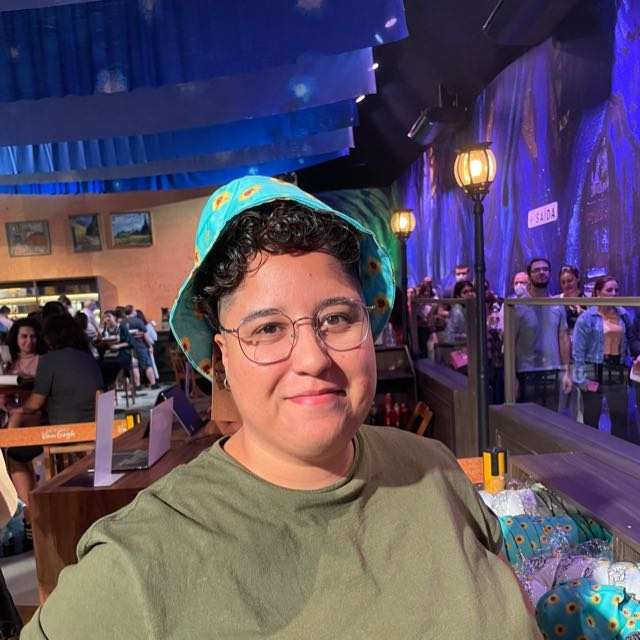
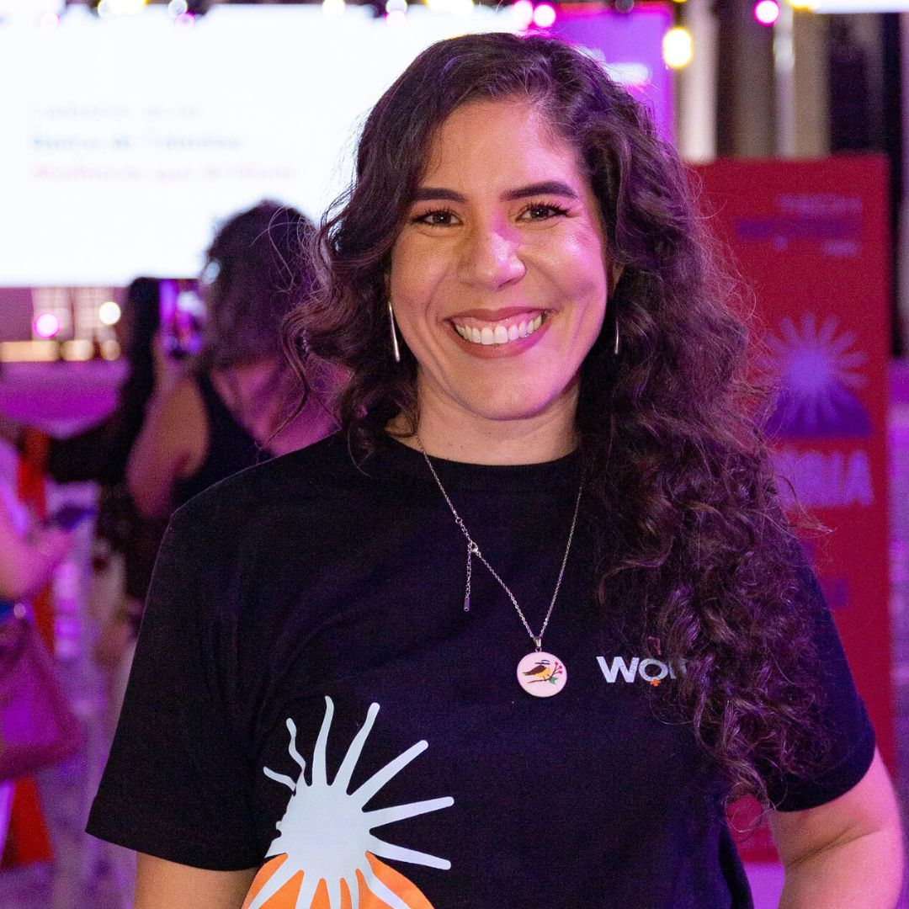

TRILHA CARREIRAS - PROGRAMAÇÃO DE PALESTRAS
Confira aqui a nossa grade de palestras. (sujeita a alterações)
08:00 – 09:00
09:00 – 09:30
ABERTURA
Organização
10:35 – 11:10
Tech não é linha reta: comunicação, visão sistêmica e carreiras em transição
Naiara Medeiros
A tecnologia ainda é frequentemente associada a carreiras lineares e altamente técnicas, mas a realidade dos times modernos mostra que crescimento também passa por comunicação, visão sistêmica e gestão de pessoas. Nesta palestra, compartilho minha trajetória de transição dentro da tecnologia — de Content Engineer atuando em projetos globais a Client Engagement Manager no mesmo ecossistema corporativo — mostrando como habilidades consideradas “não técnicas” se tornaram centrais para minha evolução profissional. Abordo os desafios de mudar de área em um ambiente estruturado, as estratégias utilizadas para ganhar confiança, ampliar escopo e assumir responsabilidades de gestão de projetos, além dos aprendizados técnicos e humanos que fizeram diferença nesse processo. A conversa também traz reflexões práticas sobre equilíbrio entre vida profissional e pessoal, mostrando como foi possível sustentar uma carreira em tecnologia enquanto desenvolvia projetos artísticos e culturais, sem perder performance ou relevância. Esta sessão é um convite para mulheres que sentem que suas carreiras não cabem em trilhas prontas e querem entender como transformar comunicação, consistência e visão estratégica em crescimento real dentro da tecnologia.
11:15 – 11:55
COFFEE BREAK
Organização
12:00 – 12:35
Do 0 ao Avançado em Cloud Computing: rota de estudos, prática e carreira
Larissa Stephanie
Na minha palestra, a ideia é ir além de contar “minha história” e compartilhar como é, na prática, construir uma carreira em Engenharia de Dados: os desafios reais do cargo, o que estudar, quais tecnologias fazem diferença e como é o dia a dia de quem atua na área. Comecei minha carreira fora da tecnologia, trabalhando como Analista de Logística. Em 2019, decidi mudar de área e migrar para tech. Em 2020, fui selecionada para a bolsa da Reprograma, onde comecei estudando Frontend. No mesmo ano, acabei mudando o foco para backend, fiz um bootcamp de Java e consegui minha primeira oportunidade como Engenheira de Software no Banco Itaú. Ainda estudando Java e seu ecossistema, entrei na Serasa Experian. Foi aí que enfrentei um novo desafio: a Serasa é uma DataTech, então precisei mudar completamente minha forma de pensar código e soluções. Aos poucos, fui direcionando meus estudos e minha atuação para dados. Depois de dois anos na empresa, recebi o convite para atuar em um time 100% voltado para dados, o que marcou oficialmente minha transição para o cargo de Engenheira de Dados. Nesse novo papel, passei a trabalhar com pipelines de dados usando Python e Apache Spark, orquestração com Airflow, infraestrutura em nuvem na AWS (como EMR e S3) e linguagem funcional Scala. Um case técnico que compartilho na palestra foi o desenvolvimento de um book de variáveis utilizado nos modelos de score da Serasa. O projeto envolvia mais de 10 tabelas com grande volume de dados, desenvolvimento em Scala e Spark, orquestração do pipeline no Airflow com cluster EMR e armazenamento dos resultados no S3 da AWS. O maior desafio desse projeto foi aprender enquanto executava. Na época, precisei aprender do zero Scala e AWS, além de aprofundar meus conhecimentos em Airflow. Montei um plano de estudos bem intenso: durante o horário de trabalho, focava no desenvolvimento do projeto; fora dele, estudava as tecnologias que ainda não dominava e seguia a trilha da certificação Cloud Practitioner. Com a ajuda de colegas mais experientes, consegui entregar o projeto e, como resultado desse processo, também conquistei a certificação AWS Cloud Practitioner. O objetivo da palestra é inspirar as participantes, mostrando que a transição para tecnologia — e especialmente para a área de dados — é possível, mas exige planejamento, estudo contínuo e troca com outras pessoas. Também quero trazer uma visão prática e técnica sobre o que realmente é ser Engenheira de Dados no dia a dia.
12:40 – 13:15

Migrar é possível: desafios reais de uma carreira em Engenharia de Dados
Caroline Araujo
Na minha palestra, a ideia é ir além de contar “minha história” e compartilhar como é, na prática, construir uma carreira em Engenharia de Dados: os desafios reais do cargo, o que estudar, quais tecnologias fazem diferença e como é o dia a dia de quem atua na área. Comecei minha carreira fora da tecnologia, trabalhando como Analista de Logística. Em 2019, decidi mudar de área e migrar para tech. Em 2020, fui selecionada para a bolsa da Reprograma, onde comecei estudando Frontend. No mesmo ano, acabei mudando o foco para backend, fiz um bootcamp de Java e consegui minha primeira oportunidade como Engenheira de Software no Banco Itaú. Ainda estudando Java e seu ecossistema, entrei na Serasa Experian. Foi aí que enfrentei um novo desafio: a Serasa é uma DataTech, então precisei mudar completamente minha forma de pensar código e soluções. Aos poucos, fui direcionando meus estudos e minha atuação para dados. Depois de dois anos na empresa, recebi o convite para atuar em um time 100% voltado para dados, o que marcou oficialmente minha transição para o cargo de Engenheira de Dados. Nesse novo papel, passei a trabalhar com pipelines de dados usando Python e Apache Spark, orquestração com Airflow, infraestrutura em nuvem na AWS (como EMR e S3) e linguagem funcional Scala. Um case técnico que compartilho na palestra foi o desenvolvimento de um book de variáveis utilizado nos modelos de score da Serasa. O projeto envolvia mais de 10 tabelas com grande volume de dados, desenvolvimento em Scala e Spark, orquestração do pipeline no Airflow com cluster EMR e armazenamento dos resultados no S3 da AWS. O maior desafio desse projeto foi aprender enquanto executava. Na época, precisei aprender do zero Scala e AWS, além de aprofundar meus conhecimentos em Airflow. Montei um plano de estudos bem intenso: durante o horário de trabalho, focava no desenvolvimento do projeto; fora dele, estudava as tecnologias que ainda não dominava e seguia a trilha da certificação Cloud Practitioner. Com a ajuda de colegas mais experientes, consegui entregar o projeto e, como resultado desse processo, também conquistei a certificação AWS Cloud Practitioner. O objetivo da palestra é inspirar as participantes, mostrando que a transição para tecnologia — e especialmente para a área de dados — é possível, mas exige planejamento, estudo contínuo e troca com outras pessoas. Também quero trazer uma visão prática e técnica sobre o que realmente é ser Engenheira de Dados no dia a dia.
13:20 – 14:20
ALMOÇO
Organização
14:25 – 15:00
PAINEL SOBRE RH
Organização
15:05 – 15:40

Ser CTO e Líder em Tech: Construindo o Futuro, Linha por Linha
Laís Xavier
Você sonha em ser CTO? Quer entender o que realmente significa estar em uma posição de liderança técnica? Nesta palestra, Laís Xavier compartilha sua jornada de mais de 20 anos — desde desenvolvedora até CTO — trazendo uma visão prática e honesta sobre o dia a dia da função, os desafios reais que ninguém comenta, e o caminho concreto para chegar lá. Descubra quais habilidades realmente importam, o que vale a pena estudar, como lidar com um ambiente que frequentemente não te espera, e como construir uma carreira sólida em liderança técnica. Uma conversa sincera sobre pessoas, tecnologia e o que significa ser uma mulher em posições de poder na tech.
15:40 – 16:10
COFFEE BREAK
Organização
16:15 – 16:50
Carreiras
Carreiras
16:50 – 17:20
Special Guest
Organização
17:20